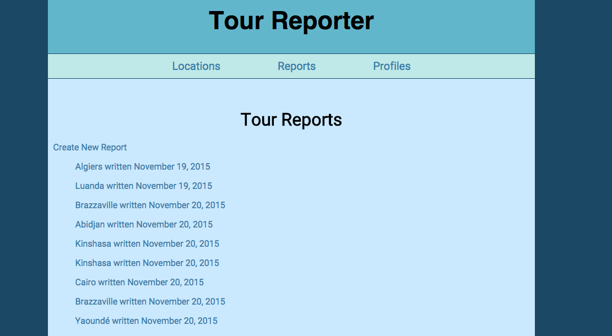
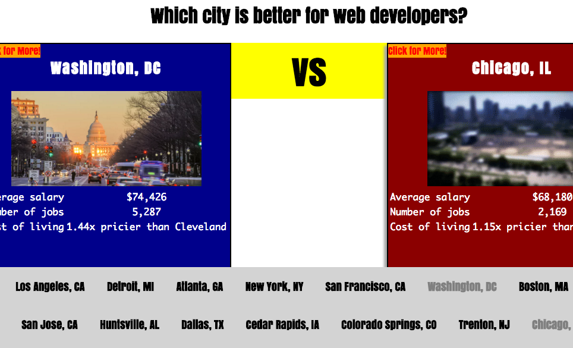

Full-stack virtual closet application. User can upload pictures of every item in closet to catalogue and organize. Technologies used included Ruby on Rails back-end with Carrierwave gem for file upload; front-end built primarily in Angular.js and Bootstrap.
Full-stack online platform for Foreign Service officers and families to share relevant experiences from tours abroad, with cross-feedback ability from other users. Technologies used included Ruby on Rails, authentication using Devise, and permissions using CanCanCan. Front-end design using CSS and HTML.
Interactive app that lets prospective web developers research relevant information about major U.S. cities by displaying useful information pertaining to web developers for the different cities, such as average salary, number of current open job listings, local companies that are currently hiring web developers, cost of living, and even lifestyle-related concerns such as bike share information, weather, and real-estate prices. Developed as part of a team.
Github, Agile
Ruby on Rails, Express, PostgresQL, MongoDB, Node.js, MVC, API,
Javascript, HTML, CSS, Angular.js, Boostrap, JQuery, Ajax
Full-stack web development program focused on common best practices in object-oriented programming, MVC frameworks, data modeling, and test-driven development. Developed a portfolio of individually focused and collaboratively focused projects
Master of Arts in International Affairs with a focus on International Security Studies, August 2012
Bachelor of Arts in International Relations, cum laude, May 2007
Bachelor of Science in Journalism, cum laude, May 2007